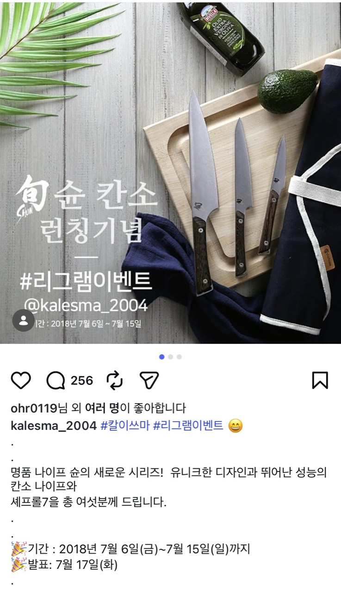

대표 상세페이지 샘플
실제 상업 작업, 2018. 선택하면 원본이 열립니다. 4개 작업의 상품 분석, 상세페이지 기획, 디자인을 담당했습니다.
맡은 일
- 상품 분석, 상세페이지 기획·디자인
- 상품 등록, 사방넷
- 고도몰·스토어팜·오픈마켓 운영
- 백화점몰 기획전
- 주문·발주, CS
- 월말 사방넷·자사몰 매출 취합 후 상급자 보고
- SNS 프로모션

칸소 론칭 리그램 이벤트
이벤트 안내부터 당첨자 발표, 후속 쿠폰 안내까지 직접 진행했습니다.
다음 작업: 타이거스톤
다음 작업 보기